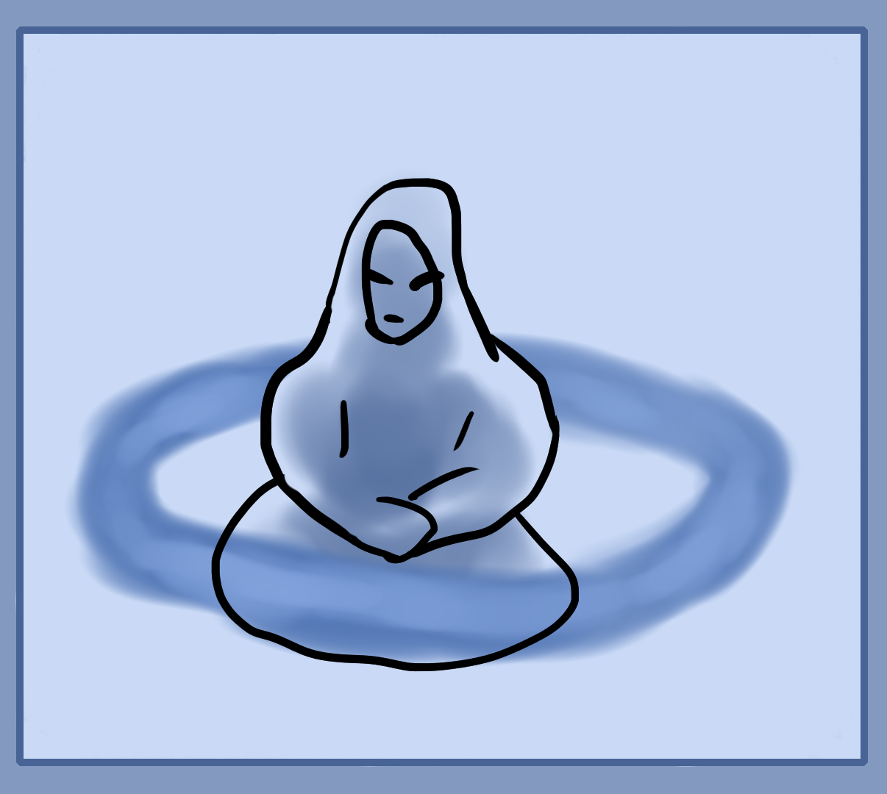

Above is a picture to show the eight angles of movement and how it effects a cube in perspective. This may help you to visualize.
Here are some extra notes before we start the next practice.
You can also practice your imaginary feeling by feeling the shapes that you're imagining. Either by imagining ghost hands touching the objects or once you have more experience you'll be able to feel an object by focusing on it, feeling each side and part of it.
Hallucination Practice
Now it's time to learn how to actively hallucinate. This means being able to vaguely see and project visual imaginations outside of yourself.
This is important for summoning spirits, making magic circles and other spells. Warm up your imagination by visually seeing objects in your mind if needed first. Then once ready, sit in a relaxing manner and focus outside of yourself or expand your sense of focus outwards. This is to bring your focus to the space around you. After that, try to feel a ring around your body at the solar plexus level. Expand this ring of pure feeling to be the size of two basketballs or 50cm away from you outwards (refer to the picture above). Now it's time to use a real physical space to imagine and hallucinate a blue ring of light infront of you (Color is your choice). Use the ring of feeling that you've made with your tactile sense as a guide in order to project visually the blue light circle.
Think of it as instead of imagining and using the mental canvas you've created in your head, you're using the outside world as your imaginary canvas. Another way is to imagine with your eyes open and overlay your imaginations upon the world outside of you.
If it's too difficult to make a blue light circle around your body then gaze at the wall, roof or floor and use that as a canvas. Imagine the circle infront of you and merge your mind with reality.
It's very important that you learn how to do this. If you're unable to then go back to the other exercises and retrain yourself to strengthen your mind and imagination. Once you can accomplish this external imagination, practice it lots. Try the past exercises of projecting geometry out, moving it around in 3D space infront of you. Spin objects and be able to fully move them in the room around you.
Practice, practice, practice, practice, practice.